Modalities#
What movement looks like in each family, shown on REAL records from the
corpus (regenerate with python site/gen_figures.py). The six
harmonized families carry a canonical contract each
(configs/canonical_*.yaml): native sampling rates, honest validity
masks, no silent unit guesses. Beyond them, the catalogue documents six
more lanes (invasive electrophysiology, imaging, genetics, histology
and transcriptomics, digital proxies and clinical scales) with cards
and access routes; they get their own sections at the bottom of this
page.
Pose#
3D optical mocap and video-derived 2D keypoints, mapped to a 15-joint canonical skeleton with per-frame, per-joint validity masks. 10 datasets ingested; the live per-family figures are on the Corpus statistics page, which is generated from the manifests.
{kind=link}
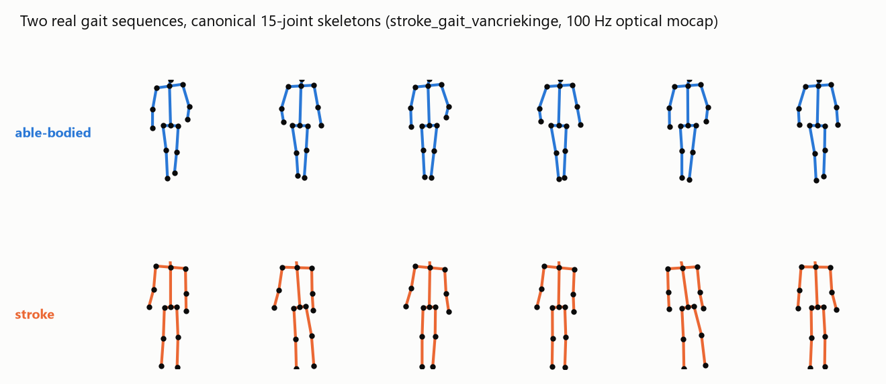
{kind=link}
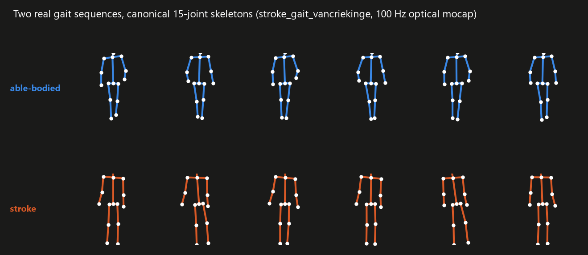
IMU#
Wearable inertial sensing on a 14-location body grid (acc/gyro/mag slots, per-channel masks): protocol trials and multi-day free living. see the Corpus statistics page for the live figures.
{kind=link}
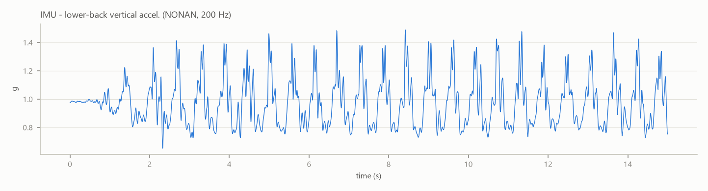
{kind=link}
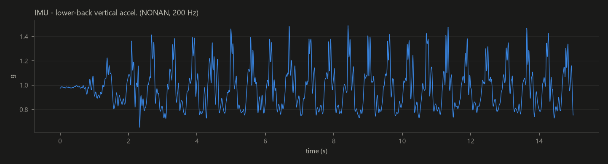
EMG#
Surface electromyography with a variable channel table naming each muscle and side (identity resolved or explicitly unknown, never guessed). 7 datasets; raw 2 kHz recordings like this one:
{kind=link}
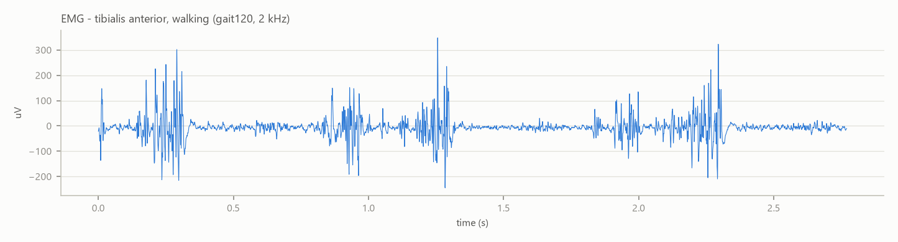
{kind=link}
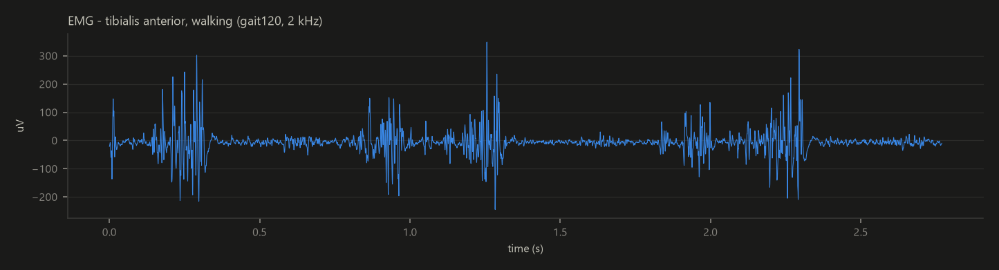
EEG#
Scalp EEG during movement protocols and sleep, harmonized with channel sites and units from the source headers. 5 datasets ingested.
{kind=link}
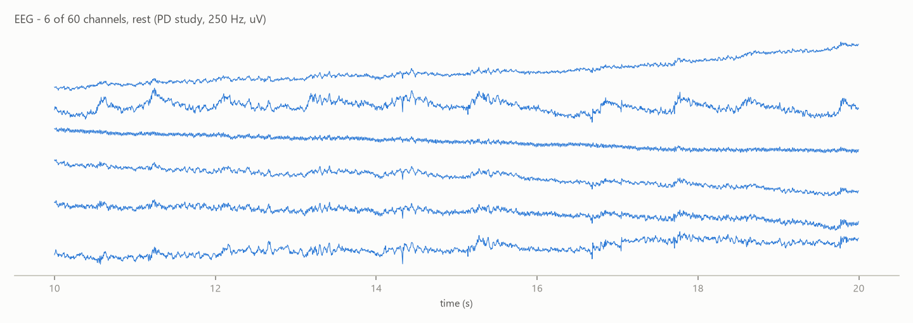
{kind=link}
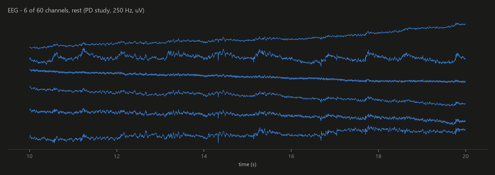
Force#
Ground-reaction forces: instrumented insoles (8 sensors + total per foot) and lab force plates. 4 datasets, 77,464 records.
{kind=link}
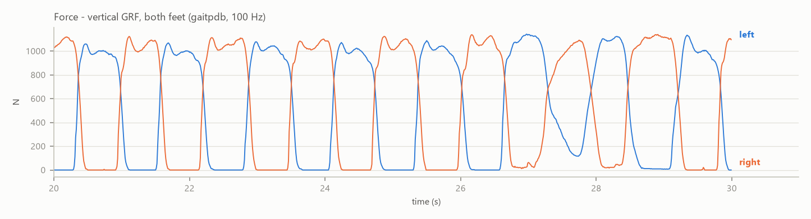
{kind=link}
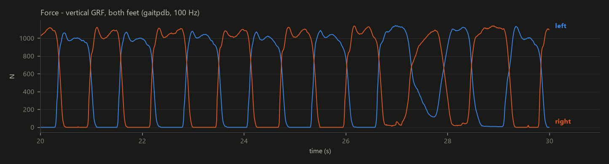
Silhouette#
Privacy-preserving body contours (64 boundary points per frame) with per-frame detection masks: the publishable face of clinical video.
{kind=link}
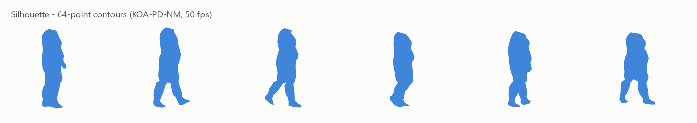
{kind=link}
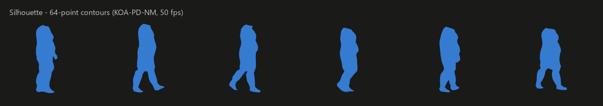
The catalogue beyond the signal families#
The six lanes below are catalogued with data cards, licences and access routes, not harmonized signal (yet). They exist because a movement foundation model eventually meets deep-brain electrophysiology, anatomy, genetics and clinical scores; each card says exactly what may be used and how. Three of these lanes can be explored on real data today in the gallery’s “Beyond the signal” section: invasive ECoG and STN-LFP during a grip-force task, movement-gene expression across the brain, and the PanelApp genetic landscape.
Invasive electrophysiology (LFP / ECoG)#
Real and partly on disk, not yet harmonized: deep-brain LFP from dystonia patients (Oxford BNDU cervical dystonia STN/thalamic LFP + EEG + neck EMG + ACC, the only open dystonia LFP in existence, 14.7 GB held), subthalamic LFP with MEG in Parkinson (MEG + STN-LFP + EMG in Parkinson’s (OpenNeuro ds004998), 162 GB held), and polysomnography with pallidal/thalamic LFP across five sleep disorders (Beijing basal-ganglia sleep LFP (121 patients, NOT public), application-gated). The Merk and Neumann ECoG+LFP decoding testbed completes the lane as tooling. Each enters the EEG family’s contract at its own ingestion pass.
MRI and imaging#
Structural MRI cohorts as anatomical references: IXI (healthy adult/aging brain MRI) (600 healthy adults 20-86), Cam-CAN (healthy aging 18-88, MRI + MEG) (700 subjects 18-88, MRI+MEG, documented barrier) and the deep NINDS cohort NINDS PDBP Data Management Resource (documented barrier).
Genetics#
Movement-disorder gene panels and genotype-phenotype references: Genomics England PanelApp movement panels (two signed-off panels, 207 + 986 genes), ClinVar bulk (movement-disorder gene subset) (variant summaries for movement genes), Human Phenotype Ontology (movement pivot) (the phenotype ontology, on disk and verified), MDSGene (genotype-phenotype knowledge base) (reference only) and the questionnaire+genetics cohort Fox Insight / Fox DEN (PD mega-cohort) (documented barrier).
Histology and transcriptomics#
The cellular substrate of movement disorders: Allen Human Brain Atlas (microarray + ISH histology) (six-donor microarray + histology, 1.65 GB on disk), Kamath 2022 human SNpc snRNA-seq (GEO GSE178265) (single-nucleus substantia nigra, PD vs controls, 5.1 GB on disk) and Multi-region PD single-nucleus atlas (2.1M nuclei) (2.1M-nucleus PD atlas).
Digital proxies (voice, writing, typing)#
Movement signal through everyday instruments: UCI Parkinson’s voice (voice), NIATS spiral + wave drawings (Archimedes spirals), neuroQWERTY MIT-CSXPD (keystroke) and Tappy keystroke (PhysioNet) (keystroke dynamics, including prodromal cohorts).
Clinical scales#
Machine-readable clinical scores that anchor every evaluation: NINDS Common Data Elements, motor scales (machine-readable) (NINDS common data elements), cdystonia (TWSTRS trial scores, hbiostat) (TWSTRS over 16 weeks, three trial arms), plus the scale tables riding inside Human Phenotype Ontology (movement pivot), Fox Insight / Fox DEN (PD mega-cohort) and NINDS PDBP Data Management Resource.